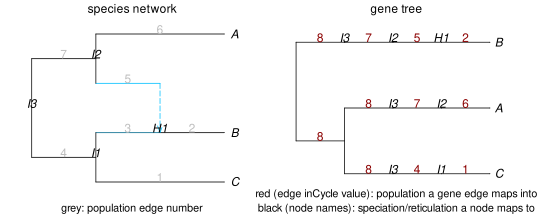
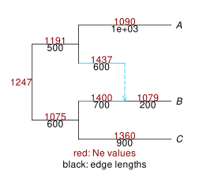

converting between units
converting edge lengths in gene trees
In earlier examples, edge lengths in gene trees are simulated in coalescent units. These lengths can be converted into numbers of generations by multiplying by the effective population size Nₑ, since coalescent units are u = g/Nₑ. This can be done with different Nₑ's across different edges in the network, including the root edge.
The formula u = g/Nₑ uses the haploid effective population size Nₑ. For diploid taxa and autosomes, the haploid population size should be twice the diploid population size, for example.
Here is an example using the same network and simulated gene tree as earlier.
julia> writeTopology(net)"((C:0.9,(B:0.2)#H1:0.7::0.6)I1:0.6,(#H1:0.6::0.4,A:1.0)I2:0.5)I3;"julia> using Random; Random.seed!(261); # as in mapping blockjulia> tree = simulatecoalescent(net,1,1; nodemapping=true)[1];julia> writeTopology(tree, round=true)"((((C:0.9)I1:0.6)I3:0.64,((A:1.0)I2:0.5)I3:0.64):1.424,(((B:0.2)H1:0.6)I2:0.5)I3:2.064);"

Let's set Nₑ to 1,000 in all populations, including the population above the root, except in edge 6. For this edge 6 (population leading to species A), let's set its Nₑ to 10,000.
julia> Ne = Dict(e.number => 1_000 for e in net.edge);julia> rootedgenumber = PhyloCoalSimulations.get_rootedgenumber(net)8julia> push!(Ne, rootedgenumber => 1_000); # add Ne for the edge above the network's rootjulia> Ne[6] = 10_000; # higher population size for the edge to species Ajulia> NeDict{Int64, Int64} with 8 entries: 5 => 1000 4 => 1000 6 => 10000 7 => 1000 2 => 1000 8 => 1000 3 => 1000 1 => 1000julia> writeTopology(tree, round=true) # lengths in coalescent units: before unit conversion"((((C:0.9)I1:0.6)I3:0.64,((A:1.0)I2:0.5)I3:0.64):1.424,(((B:0.2)H1:0.6)I2:0.5)I3:2.064);"julia> # convert edge lengths in gene tree from coalescent units to # generations for e in tree.edge e.length = round(e.length * Ne[e.inCycle]) # round: to get integers endjulia> writeTopology(tree, round=true) # lengths in # of generations"((((C:900.0)I1:600.0)I3:640.0,((A:10000.0)I2:500.0)I3:640.0):1424.0,(((B:200.0)H1:600.0)I2:500.0)I3:2064.0);"
Note that the simulation model assumes an infinite-Nₑ approximation, so the rescaling of edge lengths from coalescent units to number of generations will be imperfect for very small populations size. With the extreme Nₑ=1, coalescences should be immediate in a single generation back in time: g=1. Using the approximation, the simulated number of generations will typically be between 0-3 generations. But this is an extreme case, and the approximation should be very good even for moderate Nₑ's.
number of generations in the network and gene trees
If our input network has edge lengths in number of generations, then we need extra information to simulate under the coalescent: we need the effective size of each population. If the population size is constant, then g generations correspond to u = g/Nₑ coalescent units. If the population size varies along a single population edge, then the coalescence rate on that edge is determined by the harmonic mean $\overline{N_e}$ of the population size: $u = \int_0^g 1/N_e(t) dt = g/\overline{N_e}$.
Let's assume we have a network with number of generations as edge lengths:
julia> net_gen = readTopology("((C:900,(B:200)#H1:700::0.6)I1:600,(#H1:600::0.4,A:1000)I2:500)I3;");
and that we have a dictionary listing the (harmonic mean) population size along each edge of the species network, and also along the root edge above the network. Below, we simulate a population size for each population, from a uniform distribution between 1,000 and 1,500.
julia> # uniform distribution between 1000 and 1500, that we can draw from later Ne_distribution() = round(Int, 1000 + 500*Random.rand());julia> Ne = Dict(e.number => Ne_distribution() for e in net_gen.edge);julia> rootedgenumber = PhyloCoalSimulations.get_rootedgenumber(net_gen)8julia> push!(Ne, rootedgenumber => Ne_distribution()); # Nₑ above the rootjulia> NeDict{Int64, Int64} with 8 entries: 5 => 1437 4 => 1075 6 => 1090 7 => 1191 2 => 1079 8 => 1247 3 => 1400 1 => 1360
To visually check that we built our Nₑ dictionary correctly (and that our edge lengths are in generations, as we think), we can do this:
using DataFrames, RCall
plot(net_gen, tipoffset=0.1, showedgelength=true, edgelabelcolor="red4",
edgelabel=DataFrame(n=[e.number for e in net_gen.edge],
l=[Ne[e.number] for e in net_gen.edge]));
R"text"(x=1, y=2.5, Ne[rootedgenumber], adj=1, col="red4");
R"mtext"("red: Ne values", side=1, line=-1.5, col="red4");
R"mtext"("black: edge lengths", side=1, line=-0.5);
To simulate gene trees with edge lengths in generations, we can use a convenience wrapper function that takes Nₑ as an extra input to:
- convert edge lengths to coalescent units in the species phylogeny,
- simulate gene trees with lengths in coalescent units, then
- convert gene trees to have lengths in number of generations:
julia> genetree_gen = simulatecoalescent(net_gen,3,1, Ne; nodemapping=true);julia> writeMultiTopology(genetree_gen, stdout) # 3 gene trees, lengths in #generations((((B:200.0)H1:600.0)I2:500.0)I3:1629.0,(((C:900.0)I1:600.0)I3:197.0,((A:1000.0)I2:500.0)I3:197.0):1432.0); (((((B:200.0)H1:700.0)I1:600.0)I3:209.0,((C:900.0)I1:600.0)I3:209.0):368.0,((A:1000.0)I2:500.0)I3:577.0); (((((B:200.0)H1:700.0)I1:212.0,(C:900.0)I1:212.0):388.0)I3:2344.0,((A:1000.0)I2:500.0)I3:2344.0);
When Nₑ is given as an extra input to simulatecoalescent, edge lengths in the network are assumed to be in # of generations. If Nₑ is not given as input, then edge lengths are assumed to be in coalescent units.